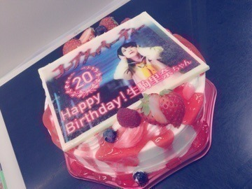
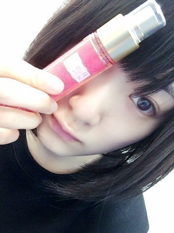
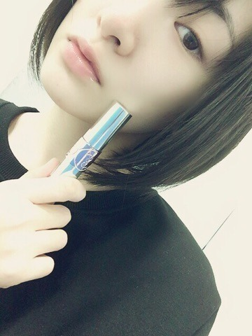

| 2016/01 09 Sat | おそ松さんが活力で す。永遠の十四松推しですが、最近一松兄さんが可愛くて可愛くてしょうがないです。でもまんまと トッティーのあざとさにやられます。時々チョロ松のリヴァイぽい声の時ひとりでニヤニヤしていま す。あ、ここらで本題に入りますねᕕ( ᐛ )ᕗ |
言いたいことがいっぱいあるって素晴らしい事ですね(^-^)
改めて感じます！
感性も趣味も見た目もいろいろ挑戦していきたいお年頃

そうそう！
久しぶりにコープスパーティーのイベントでみんな集まったのですが！

お誕生日をお祝いして頂きました〜(*^o^*)
空調の風にろうそくの火消されました笑
皆さんの温かさを感じました！
ありがとうございましたヽ(・∀・)ノ
サチコ役のほのかちゃんから女子力上がるセット頂きましたヽ(・∀・)ノ
お誕生日プレゼント〜(*^o^*)

ローズのボディミスト❤︎
まえのんちゃん❤︎❤︎
いつみても癒される〜
大好きなひとっ！！
まえのんちゃんからも貰ったよイヴ・サンローラン❤︎❤︎

まえのんちゃんのブログ見たらいろいろ書いてくれてたよう❤︎❤︎❤︎
改めてありがとうございます
コープスパーティーの原作者の祁答院さんからも頂きましたヽ(・∀・)ノ
生駒ちゃん欲しかったコープスパーティーのTシャツ❤︎❤︎
着たら載せますねっ☆彡
続編成功させるぞ〜〜ヽ(・∀・)ノヽ(・∀・)ノ
祁答院さん！
山田監督！！
生駒ちゃんを血だらけにして下さいませヽ(・∀・)ノヽ(・∀・)ノ
笑
あとね、杉田智和さんにお会いしたよう！
ディアラバのお話ししたようヽ(・∀・)ノ
↑知ってる人は知っている話題
うん！
今年も頑張るぞヽ(・∀・)ノ
へばなっ☆彡
コメント(779)
2016/01/09 19:00